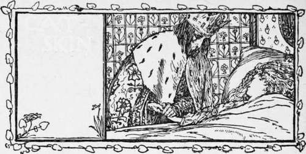
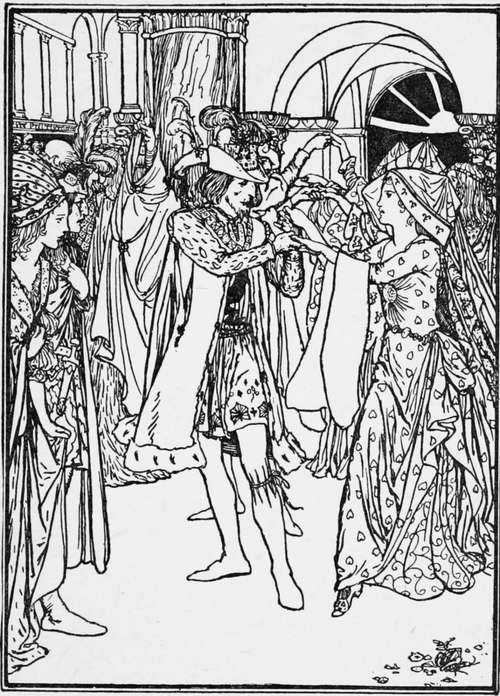

Cat-Skin
Description
This section is from the book "Household Tales by Brothers Grimm", by Brothers Grimm. Also available from Amazon: Household Tales by Brothers Grimm.
Cat-Skin
There was once a king, whose queen had hair of the purest gold, and was so beautiful that her match was not to be met with on the whole face of the earth. But this beautiful queen fell ill, and when she felt that her end drew near she called the king to her and said, " Promise me that you will never marry again, unless you meet with a wife who is as beautiful as I am, and who has golden hair like mine." Then when the king in his grief had promised all she asked, she shut her eyes and died. But the king was not to be comforted, and for a long time never thought of taking another wife. At last, however, his wise men said, "This will not do; the king must marry again, that we may have a queen." So messengers were sent far and wide, to seek for a bride as beautiful as the late queen. But there was no princess in the world so beautiful; and if there had been, still there was not one to be found who had golden hair. So the messengers came home, and had had all their trouble for nothing.
Now the king had a daughter, who was just as beautiful as her mother, and had the same golden hair. And when she was grown up, the king looked at her and saw that she was just like his late queen: then he said to his courtiers, " May I not marry my daughter ? she is the very image of my dead wife: unless I have her, I shall not find any bride upon the whole earth, and you say there must be a queen." When the courtiers heard this they were shocked, and said, "Heaven forbid that a father should marry his daughter! Out of so great a sin no good can come." And his daughter was also shocked, but hoped the king would soon give up such thoughts : so she said to him, "Before I marry any one I must have three dresses: one must be of gold, like the sun; another must be of shining silver, like the moon; and a third must be dazzling as the stars : besides this, I want a mantle of a thousand different kinds of fur put together, to which every beast in the kingdom must give a part of his skin." And thus she thought he would think of the matter no more. But the king made the most skilful workmen in his kingdom weave the three dresses : one golden, like the sun; another silvery, like the moon; and a third sparkling, like the stars : and his hunters were told to hunt out all the beasts in his kingdom, and to take the finest fur out of their skins : and thus a mantle of a thousand furs was made.
When all were ready, the king sent them to her; but she got up in the night when all were asleep, and took three of her trinkets, a golden ring, a golden necklace, and a golden brooch; and packed the three dresses—of the sun, the moon, and the stars—up in a nut-shell, and wrapped herself up in the mantle made of all sorts of fur, and besmeared her face and hands with soot. Then she threw herself upon Heaven for help in her need, and went away, and journeyed on the whole night, till at last she came to a large wood. As she was very tired, she sat herself down in the hollow of a tree and soon fell asleep: and there she slept on till it was midday.
Now as the king to whom the wood belonged was hunting in it, his dogs came to the tree, and began to snuff about, and run round and round, and bark. " Look sharp! " said the king to the huntsmen, " and see what sort of game lies there." And the huntsmen went up to the tree, and when they came back again said, " In the hollow tree there lies a most wonderful beast, such as we never saw before; its skin seems to be of a thousand kinds of fur, but there it lies fast asleep." "See," said the king, " if you can catch it alive, and we will take it with us." So the huntsmen took it up, and the maiden awoke and was greatly frightened, and said, "I am a poor child that has neither father nor mother left; have pity on me and take me with you." Then they said, " Yes, Miss Cat-skin, you will do for the kitchen; you can sweep up the ashes, and do things of that sort." So they put her into the coach, and took her home to the king's palace. Then they showed her a little corner under the staircase, where no light of day ever peeped in, and said, " Cat-skin, you may lie and sleep there." And she was sent into the kitchen, and made to fetch wood and water, to.blow the fire, pluck the poultry, pick the herbs, sift the ashes, and do all the dirty work.
Thus Cat-skin lived for a long time very sorrowfully. " Ah ! pretty princess! " thought she, " what will now become of thee ?" But it happened one day that a feast was to be held in the king's castle; so she said to the cook, "May I go up a little while and see what is going on? I will take care and stand behind the door." And the cook said, "Yes, you may go, but be back again in half an hour's time, to rake out the ashes." Then she took her little lamp, and went into her cabin, and took off the fur skin, and washed the soot from off her face and hands, so that her beauty shone forth like the sun from behind the clouds. She next opened her nut-shell, and brought out of it the dress that shone like the sun, and so went to the feast. Every one made way for her, for nobody knew her, and they thought she could be no less than a king's daughter. But the king came up to her, and held out his hand and danced with her; and he thought in his heart, "I never saw any one half so beautiful."
When the dance was at an end she courtesied; and when the king looked round for her, she was gone, no one knew whither. The guards that stood at the castle gate were called in: but they had seen no one. The truth was, that she had run into her little cabin, pulled off her dress, blackened her face and hands, put on the fur-skin cloak, and was Cat-skin again. When she went into the kitchen to her work, and began to rake the ashes, the cook said, "Let that alone till the morning, and heat the king's soup; I should like to run up now and give a peep : but take care you don't let a hair fall into it, or you will run a chance of never eating again."
As soon as the cook went away, Cat-skin heated the king's soup, and toasted a slice of bread first, as nicely as ever she could; and when it was ready, she went and looked in the cabin for her little golden ring, and put it into the dish in which the soup was. When the dance was over, the king ordered his soup to be brought in; and it pleased him so well, that he thought he had never tasted any so good before. At the bottom he saw a gold ring lying; and as he could not make out how it had got there, he ordered the cook to be sent for. The cook was frightened when he heard the order, and said to Cat-skin, "You must have let a hair fall into the soup; if it be so, you will have a good beating." Then he went before the king, and he asked him who had cooked the soup. "I did," answered the cook. But the king said, "That is not true; it was better done than you could do it." Then he answered, "To tell the truth I did not cook it, but Cat-skin did." "Then let Cat-skin come up," said the king: and when she came he said to her, "Who are you?" "I am a poor child," said she, "that has lost both father and mother." "How came you in my palace?" asked he. "I am good for nothing," said she, "but to be scullion-girl, and to have boots and shoes thrown at my head." "But how did you get the ring that was in the soup ?" asked the king. Then she would not own that she knew anything about the ring; so the king sent her away again about her business.
After a time there was another feast, and Cat-skin asked the cook to let her go up and see it as before. "Yes," said he, "but come back again in half an hour, and cook the king the soup that he likes so much." Then she ran to her little cabin, washed herself quickly, and took her dress out which was silvery as the moon, and put it on; and when she went in, looking like a king's daughter, the king went up to her, and rejoiced at seeing her again, and when the dance began he danced with her. After the dance was at an end she managed to slip out, so slily that the king did not see where she was gone; but she sprang into her little cabin, and made herself into Cat-skin again, and went into the kitchen to cook the soup. Whilst the cook was above stairs, she got the golden necklace and dropped it into the soup; then it was brought to the king, who ate it, and it pleased him as well as before; so he sent for the cook, who was again forced to tell him that Cat-skin had cooked it. Cat-skin was brought again before the king, but she still told him that she was only fit to have boots and shoes thrown at her head.
The King danced with her.
But when the king had ordered a feast to be got ready for the third time, it happened just the same as before. "You must be a witch, Cat-skin," said the cook; "for you always put something into your soup, so that it pleases the king better than mine." However, he let her go up as before. Then she put on the dress which sparkled like the stars, and went into the ball-room in it; and the king danced with her again, and thought she had never looked so beautiful as she did then. So whilst he was dancing with her, he put a gold ring on her finger without her seeing it, and ordered that the dance should be kept up a long time. When it was at an end, he would have held her fast by the hand, but she slipped away, and sprang so quickly through the crowd that he lost sight of her: and she ran as fast as she could into her little cabin under the stairs. But this time she kept away too long, and stayed beyond the half-hour; so she had not time to take off her fine dress, but threw her fur mantle over it, and in her haste did not blacken herself all over with soot, but left one of her fingers white.
Then she ran into the kitchen, and cooked the king's soup; and as soon as the cook was gone, she put the golden brooch into the dish. When the king got to the bottom, he ordered Cat-skin to be called once more, and soon saw the white finger, and the ring that he had put on it whilst they were dancing: so he seized her hand, and kept fast hold of it, and when she wanted to loose herself and spring away, the fur cloak fell off a little on one side, and the starry dress sparkled underneath it.
Then he got hold of the fur and tore it off, and her golden hair and beautiful form were seen and she could no longer hide herself: so she washed the soot and ashes from off her face, and showed herself to be the most beautiful princess upon the face of the earth. But the king said, " You are my beloved bride, and we will never more be parted from each other." And the wedding feast was held, and a merry day it was, as ever was heard of or seen in that country, or indeed in any other.
Continue to:
Tags
fairy tales, children's stories, brothers grimm, household tales